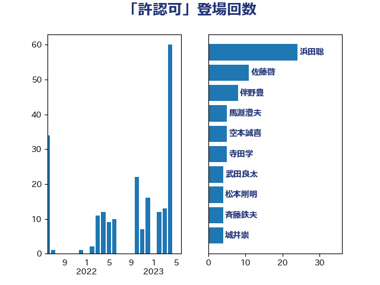

単語「許認可」

| 浜田聡 | NHK党 | 24 回 |
| 佐藤啓 | 自由民主党 | 11 回 |
| 伴野豊 | 立憲民主党 | 8 回 |
| 馬淵澄夫 | 立憲民主党 | 5 回 |
| 空本誠喜 | 日本維新の会 | 5 回 |
| 寺田学 | 立憲民主党 | 5 回 |
| 武田良太 | 自由民主党 | 4 回 |
| 松本剛明 | 自由民主党 | 4 回 |
| 斉藤鉄夫 | 公明党 | 4 回 |
| 城井崇 | 立憲民主党 | 4 回 |
| 三上えり | 立憲民主党 | 4 回 |
| 長浜博行 | 無所属 | 3 回 |
| 鈴木義弘 | 国民民主党 | 3 回 |
| 浅野哲 | 国民民主党 | 3 回 |
| 梶山弘志 | 自由民主党 | 3 回 |
| 柳ヶ瀬裕文 | 日本維新の会 | 3 回 |
| 岩渕友 | 日本共産党 | 3 回 |
| 山岡達丸 | 立憲民主党 | 3 回 |
| 小野泰輔 | 日本維新の会 | 3 回 |
| 高橋千鶴子 | 日本共産党 | 2 回 |
| 金子恭之 | 自由民主党 | 2 回 |
| 西岡秀子 | 国民民主党 | 2 回 |
| 萩生田光一 | 自由民主党 | 2 回 |
| 田村智子 | 日本共産党 | 2 回 |
| 梅村みずほ | 日本維新の会 | 2 回 |
| 岸田文雄 | 自由民主党 | 2 回 |
| 小宮山泰子 | 立憲民主党 | 2 回 |
| 塩川鉄也 | 日本共産党 | 2 回 |
| 青木愛 | 立憲民主党 | 1 回 |
| 野田国義 | 立憲民主党 | 1 回 |
| 野村哲郎 | 自由民主党 | 1 回 |
| 芳賀道也 | 国民民主党 | 1 回 |
| 笠井亮 | 日本共産党 | 1 回 |
| 神谷裕 | 立憲民主党 | 1 回 |
| 石川香織 | 立憲民主党 | 1 回 |
| 浦野靖人 | 日本維新の会 | 1 回 |
| 河野太郎 | 自由民主党 | 1 回 |
| 沢田良 | 日本維新の会 | 1 回 |
| 森田俊和 | 立憲民主党 | 1 回 |
| 川田龍平 | 立憲民主党 | 1 回 |
| 岩本剛人 | 自由民主党 | 1 回 |
| 岡田直樹 | 自由民主党 | 1 回 |
| 岡本あき子 | 立憲民主党 | 1 回 |
| 山岸一生 | 立憲民主党 | 1 回 |
| 小野寺五典 | 自由民主党 | 1 回 |
| 小沢雅仁 | 立憲民主党 | 1 回 |
| 小山展弘 | 立憲民主党 | 1 回 |
| 寺田稔 | 自由民主党 | 1 回 |
| 天畠大輔 | れいわ新選組 | 1 回 |
| 和田有一朗 | 日本維新の会 | 1 回 |
| 吉良よし子 | 日本共産党 | 1 回 |
| 古賀千景 | 立憲民主党 | 1 回 |
| 中西祐介 | 自由民主党 | 1 回 |
| 中川宏昌 | 公明党 | 1 回 |